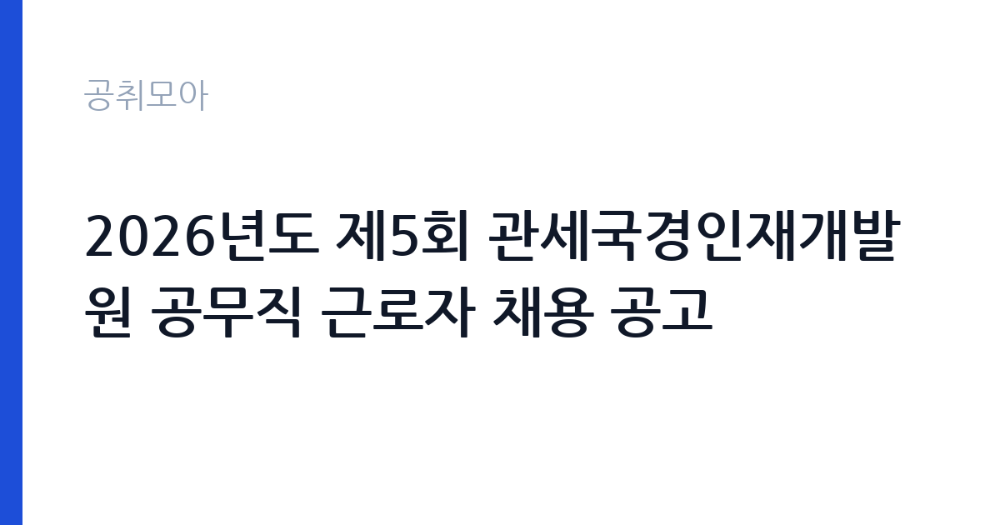

[국가기관] 2026년도 제5회 관세국경인재개발원 공무직 근로자 채용 공고
관세청 관세국경인재개발원 · 인천 · 마감 2026-11-10 (D-7) · 출처 나라일터

한눈에 보는 모집 조건
| 기관 | 관세청 관세국경인재개발원 |
|---|---|
| 공고명 | 2026년도 제5회 관세국경인재개발원 공무직 근로자 채용 공고 |
| 고용형태 | 공무직 |
| 근무지 | 인천 |
| 게시일 | 2026-11-03 |
| 마감일 | 2026-11-10 (D-7) |
지원자격, 이렇게 읽으세요
- 청소원(미화) 1명 경비원 1명 청소원(사양관리) 1명
- 접수 ~2026-11-10 마감
- 세부 조건은 원문 공고문 확인
공무직 근로자는 공무원이 아니라 근로기준법이 적용되는 근로자이지만 기간의 정함이 없는 무기계약으로 채용되는 경우가 많아 정년까지 근무가 가능합니다. 채용은 공무원 시험과 달리 기관의 자체 전형으로 진행되고 인사 규정과 임금표를 적용받습니다. 이번 공고는 관세청 관세국경인재개발원에서 직접 진행하는 자체 전형으로, 응시자격과 제출서류는 공고문에 항목별로 제시됩니다. 공무직 채용은 학력·경력 제한을 두지 않는 대신 실제 근무 가능성과 건강 상태를 확인합니다. 무기계약으로 채용되면 정년까지 근무가 가능하고, 수습 기간 평가를 거칩니다. 경비 직무는 교대 근무가 포함되므로 야간 근무 가능 여부가 실질적인 조건입니다. 국가공무원법상 결격사유 확인과 채용 신체검사 절차가 따릅니다. 모집 인원이 직종별 1명씩이라 지원자가 몰리면 경쟁률이 높아질 수 있습니다. 서류는 접수 마감 이후 보완이 되지 않으므로 자격 요건과 증빙 서류를 마감 전에 모두 갖춰야 합니다. 공고문에 명시된 우대 사항은 해당 여부를 확인해 증빙을 첨부해야 가점이 반영됩니다. 자격 취득 예정자는 채용 공고의 예정자 허용 조항을 먼저 확인해야 합니다. 조항이 없으면 지원 자체가 반려될 수 있습니다.
이 공고의 포인트
이 공고의 첫 번째 포인트는 고용 형태입니다. 무기계약으로 채용되면 정년까지 근무가 가능해 재계약 부담이 없습니다. 반대로 기간제로 채용되는 공고라면 계약 기간을 먼저 확인해야 합니다. 두 번째는 업무 범위가 명확하다는 점입니다. 청사 미화·방호(공무직) 직무로 채용되므로 배치 이후 담당 업무가 크게 흔들리지 않습니다. 세 번째는 근무지입니다. 인천 지역 근무로 접근성은 좋지만 그만큼 지원자가 몰리는 지역이므로 경쟁률을 넉넉히 잡아야 합니다. 공고가 올라온 지 얼마 되지 않아 아직 지원자 수가 많지 않을 가능성이 있습니다. 같은 직무로 함께 올라온 공고 4건 가운데 마감이 중간에 위치하므로 다른 공고와 일정이 겹치는지 확인하십시오. 다만 선발 인원이 1명으로 많지 않아 자격을 갖춘 지원자가 몰리면 경쟁률이 높아질 수 있습니다.
전형은 어떻게 진행되나
전형은 서류심사와 면접심사를 기본으로 하고 직무에 따라 필기나 실기, 체력검정이 추가됩니다. 서류 단계에서는 응시자격 충족 여부와 제출서류 형식을 확인하며 이 단계에서 탈락하는 지원자가 적지 않습니다. 면접은 직무 이해도와 경험을 확인하는 방식으로 진행되고 발표는 개별 통보나 홈페이지 게시로 이뤄집니다. 최종합격 이후에는 결격사유 조회와 채용 신체검사가 이어지며 이 절차에서 문제가 확인되면 합격이 취소될 수 있습니다. 구체적인 전형 단계와 배점은 공고문에 표로 정리되어 있으니 원문을 기준으로 준비하십시오. 결과 발표는 문자와 이메일로 동시에 이뤄지지 않는 경우가 있어 두 경로를 모두 확인하십시오.
이런 분께 추천해요
- 장기간 성실하게 근무할 수 있는 분
- 교대·야간 근무를 수용할 수 있는 분
- 청사 보안과 방문자 응대에 거부감이 없는 분
지원 전 체크리스트
- 응시자격 요건과 경력 기준을 충족하는가 — 경력은 증명서로 입증해야 합니다
- 무기계약 여부와 정년 기준을 공고문에서 확인했는가
- 제출서류 목록을 모두 준비했는가 — 누락 시 서류 단계에서 탈락합니다
- 접수 마감 2026-11-10 이전에 접수 방식을 확인해 제출했는가
모집 일정과 제출 타이밍
접수 마감은 2026-11-10이고 공고는 2026-11-03에 게시되었습니다. 준비 기간 7일 안에 서류 작성, 증빙 발급, 접수를 모두 마쳐야 하므로 주말을 포함해 일정을 미리 나누는 것이 좋습니다. 특히 경력 기술서나 직무수행계획서를 요구하는 공고는 작성에 시간이 걸리므로 첫날 초안을 잡으십시오. 서류 합격자 발표와 면접 사이 간격이 짧은 경우가 많아 면접 예상 질문은 서류 제출 전에 정리해 두는 편이 유리합니다. 마감 직전에는 접속이 몰리므로 여유를 두고 제출하십시오. 공휴일이 끼어 있으면 증명서 발급이 늦어질 수 있으니 발급 일정을 앞당기십시오. 인천 근무지는 지역 내 이동 거리가 길어 출퇴근 시간이 생각보다 많이 걸릴 수 있습니다. 마감까지 일주일 안팎이 남아 서류 준비와 증빙 발급을 병행해야 합니다. 선발 인원이 한두 명 수준이라 지원자 개개인의 서류 완성도가 그대로 평가에 반영됩니다.
직무 이해하기: 국가기관
관세국경인재개발원 공무직 근로자는 청소원과 경비원, 청소원(사양관리)으로 나뉘어 근무합니다. 청소원은 교육동과 기숙사, 화장실, 복도를 정해진 순서와 주기로 청소하고 쓰레기를 분리해 배출합니다. 경비원은 청사 출입 통제와 순찰, 방문자 안내, 방호 설비 확인을 맡습니다. 사양관리는 청사 외곽과 시설물 상태를 살피고 파손이나 이상을 담당 부서에 알리는 업무입니다. 교육 일정이 있는 날에는 강의장 정리와 행사 지원이 추가됩니다. 업무 강도와 근무 시간대는 부서 배치에 따라 달라지므로 면접에서 확인하는 것이 가장 정확합니다.
자기소개서 작성 팁
지원서는 구체적인 생활 경험이 효과적입니다. 이전 직장에서 청결을 유지하거나 시설을 관리한 경험, 봉사나 경비 업무 경험을 기간과 함께 적으십시오. 장기 근무 의사와 출퇴근 가능성을 분명히 쓰고, 체력 유지 방법을 한 줄 덧붙이면 신뢰를 줍니다. 교육기관 청사라는 근무지 특성상 방문자 응대와 보안 의식을 언급하면 좋습니다. 구성은 지원 동기, 직무 경험, 기여 방안 순서가 무난합니다. 지원 동기는 관세청 관세국경인재개발원의 사업 중 본인이 관심을 가진 부분을 한 가지로 좁혀 서술하고 추상적인 표현은 줄이십시오. 직무 경험은 담당했던 업무와 규모, 결과를 수치로 제시하면 설득력이 올라갑니다. 기여 방안은 입사 후 첫 3개월과 1년 계획으로 나눠 쓰면 준비도가 드러납니다.
면접 준비 포인트
면접에서는 성실성과 근무 지속 의사를 확인합니다. 힘든 작업을 오래 할 수 있는지, 지저분한 업무를 꺼리지 않는지, 함께 일하는 사람과 어떻게 협력하는지를 묻습니다. 경비 직무 지원자는 출입 통제 절차와 위급 상황 보고 체계를 정리해 두십시오. 결근 없이 근무할 수 있는지, 출퇴근 시간을 지킬 수 있는지가 실질적인 판단 기준입니다. 답변은 상황, 판단, 조치의 순서로 정리하면 전달이 분명해집니다. 모르는 질문에는 모른다고 밝히고 확인 방법을 제시하는 편이 억지 답변보다 낫습니다. 마지막에는 근무 의사와 함께 2026-11-10 이후 일정에 언제든 응할 수 있다는 점을 전달하십시오. 지원 기관의 최근 사업이나 조직 개편 내용을 확인해 두면 지원 동기 질문에서 차이가 납니다.
급여·근무조건 읽는 법
공무직 근로자 보수는 관세청 공무직 임금 기준을 따르며, 기본급에 정액급식비·명절휴가비·복지포인트가 더해지고 교대 근무 시 야간·휴일수당이 붙습니다. 무기계약 신분이면 매년 임금이 조정되고 정년까지 근무가 가능합니다. 2026년 적용 최저임금은 시급 10,320원, 월 환산 2,156,880원이 최소 기준선입니다. 직종별 호봉과 수당 항목은 공고문 처우표에 제시되어 있으니 원문에서 확인하십시오. 2026년 적용 최저임금은 시급 10,320원, 월 환산 2,156,880원(주 40시간·209시간 기준)입니다. 고용노동부 고시 제2025-47호로 확정된 금액입니다. 공고문에 금액이 제시되지 않은 항목은 원문 보수표나 처우 설명에서 확인해야 하며 확인되지 않은 수치는 쓰지 않는 것이 원칙입니다. 비교할 때는 월 급여뿐 아니라 상여·명절휴가비·복지포인트·초과근무수당까지 포함한 연간 총액으로 계산하십시오. 기간제라면 계약 기간 동안의 총액을, 무기계약이라면 호봉 상승과 정년까지의 누적 소득을 기준으로 판단하는 편이 정확합니다.
자주 묻는 질문
- 선발 인원은 몇 명인가요?
공고문 기준 1명입니다. 직종별로 인원이 나뉘는 경우가 있으니 모집분야 항목을 함께 확인하십시오. - 근무지는 어디인가요?
인천 지역의 관세청 관세국경인재개발원 소속 근무지입니다. 세부 주소와 출퇴근 조건은 원문 공고문에서 확인할 수 있습니다. - 보수는 얼마인가요?
채용 신분(공무직)과 기관 임금 규정에 따라 정해지며 구체적인 금액은 공고문 처우 항목에 제시됩니다. 금액이 공개되지 않은 경우에는 원문의 보수표를 확인하십시오.
함께 보면 좋은 공고
[국가기관] 임기제공무원(일반임기제, 통번역 6급, 1명) 경력경쟁채용 공고 — 마감 2026-11-18[국가기관] 2026년도 제7회 국립목포대학교 기간제 채용 공고 (인권센터 상담) — 마감 2026-11-13[국가기관] 2026년 하반기 지역별사업체노동력조사 통계조사관 추가 채용공고 — 마감 2026-11-09출처: 나라일터 공개정보를 바탕으로 공취모아가 정리한 안내글입니다. 모집 조건·일정은 변경될 수 있으니 지원 전 반드시 원문 공고문을 확인하세요. 본 글은 정보 제공용이며 합격을 보장하지 않습니다.